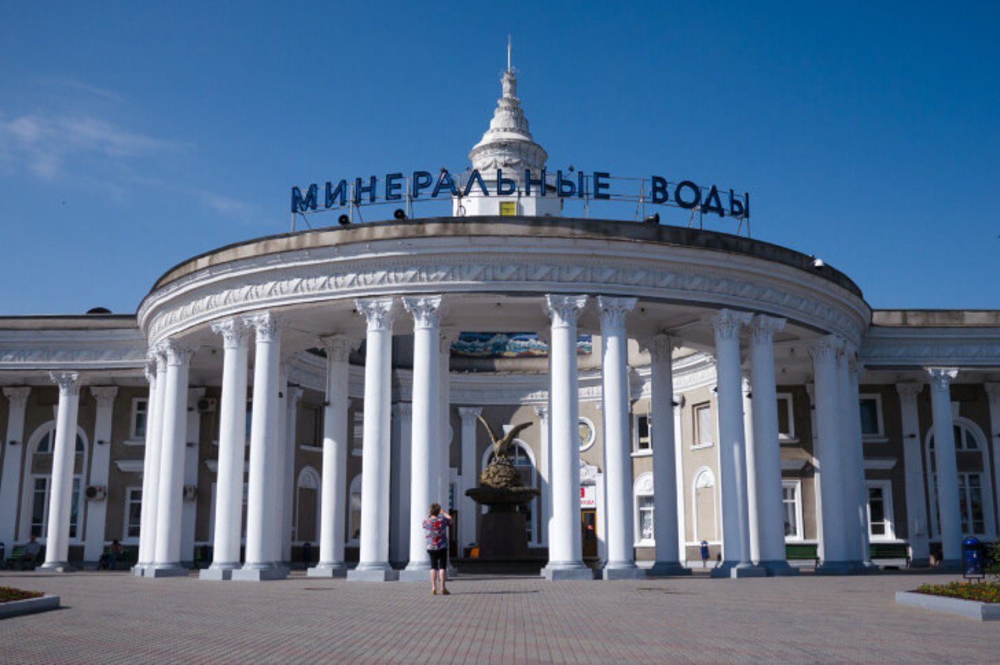
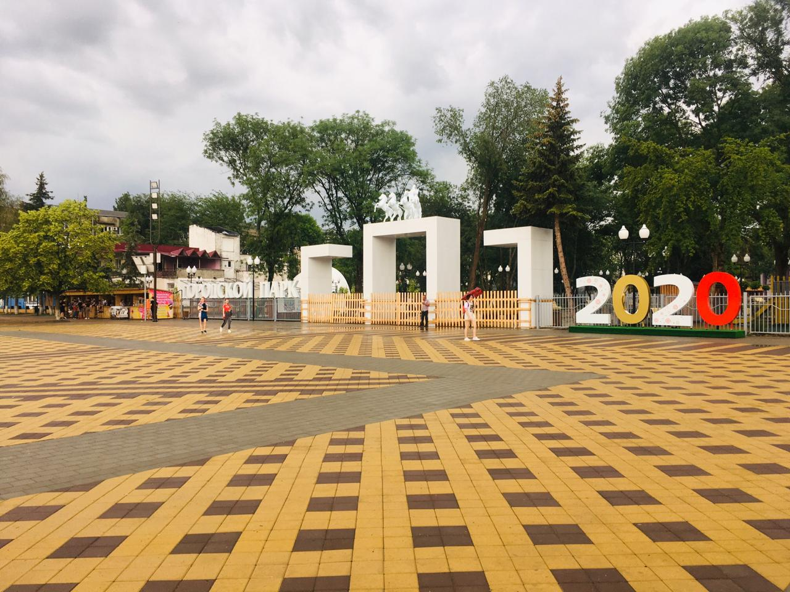
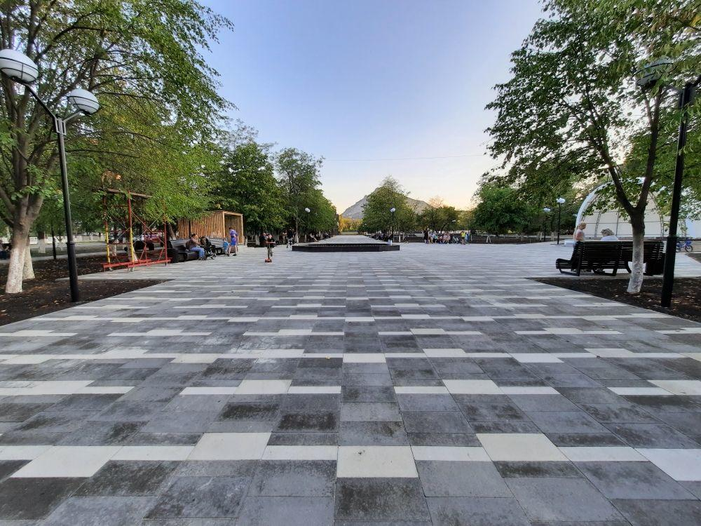
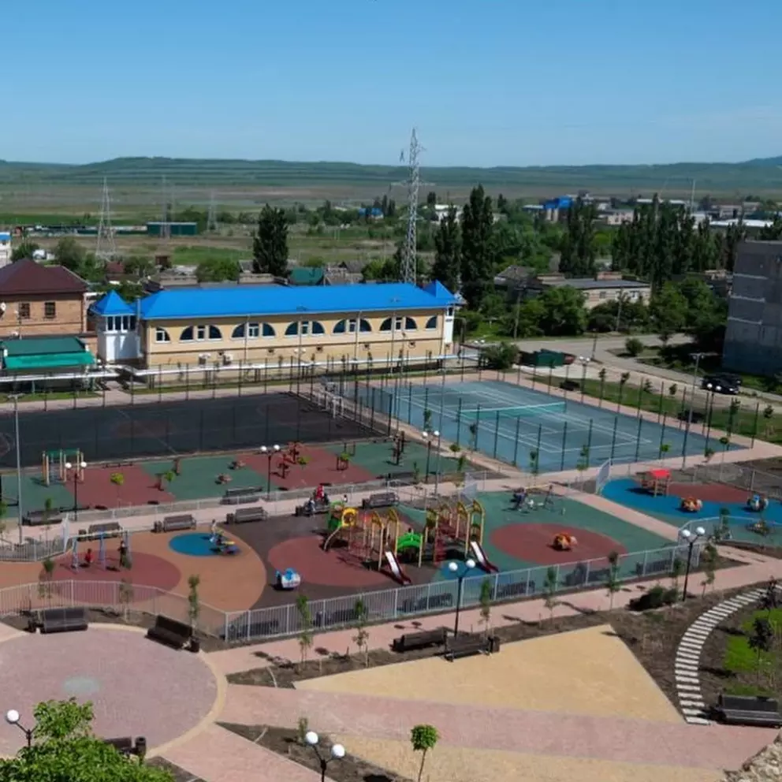
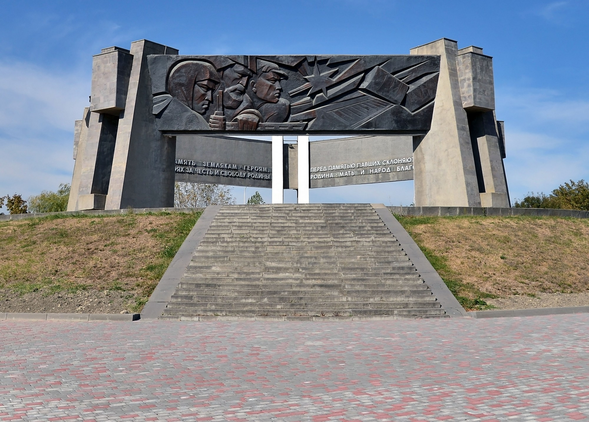

Минеральные Воды
Городские достопримечательности
Железнодорожный Вокзал
Станция была открыта в 1875 году в ходе строительства Владикавказской железной дороги. Первоначально носила название Султановская. 17 мая 1894 года открылось регулярное движение поездов на участке Минеральные Воды — Кисловодск. В 1936 году она была электрифицирована на постоянном токе напряжением 1,5 кВ.
Городской парк
Это небольшой городской парк в центре города, с фонтанами, аттракционами для детей и тенистыми аллеями, в которых так хорошо укрыться от летней жары. Центральное место в парке занимает памятник «Вечный Огонь» и братская могила воинов, защищавших Минеральные Воды в годы Великой Отечественной войны.
Сквер "Надежда"
Общая площадь сквера – более 10 тысяч квадратных метров. По всему его периметру специалисты проложили пешеходные дорожки, покрытые новой тротуарной плиткой. Для любителей активного отдыха создана спортивная воркаут-площадка. Для ребят обустроена игровая площадка с качелями
Сквер "Дубрава"
«Этот пример показывает, как с помощью нацпроекта можно преобразить заброшенное место, превратив его в комфортную городскую среду», – отметил глава региона. В новой зоне отдыха располагается спортивная площадка, установлены гимнастические комплексы и тренажёры.
"Огонь Вечной Славы"
В память о павших в сражениях Великой Отечественной войны героев, жертв нацизма и фашизма сооружено бессчетное количество памятников. Одним из таких является комплекс, получивший знаковое название "Огонь Вечной Славы", открытие которого произошло 9 мая 1976 г. на площади, именуемой "30 лет Победы", в населенном пункте Минеральные Воды. С момента его открытия в этом знаменательном месте проводятся торжественные митинги, приуроченные празднованию Великой Победы. На протяжении восемнадцати лет здесь установлен Пост №1.